72 screens, light and darkRound r03Round 2 scored 8.2; round 3 being scored
Each screen shows its resting state. Play motion runs it live; tap a phone to open it full size, where the buttons lead through the flows. Before / after puts the current app next to the redesign.
Five grounds, one meaning eachApricot for your days, ocean for cravings, violet for evenings, mint for the plan, cream or navy for reading.
One primary buttonInk on light grounds, cream on dark. No more green, purple or yellow buttons.
Every finish gets a momentA check draws, the character reacts, the number counts up, a badge stamps in when one is earned.
Badges, not pointsPrep stamps 1 to 7, Day Xero, days free, waves ridden and evenings, shown wherever progress shows.
Icon and launch
A new icon where the zero is Xero, and a 2.4 s paper-cut sunrise to open the app.
000
App icon
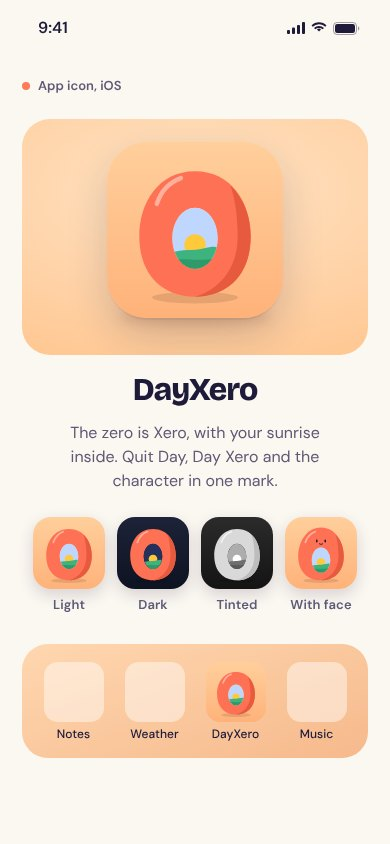
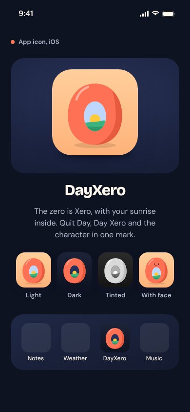
Motion The icon settles in (900 ms), then the sun rises 40 units inside Xero's window over 1.2 s (ease-out) and the variants arrive with a 90 ms stagger. On device: the static icon; the sunrise can play in the launch screen's first 400 ms so icon and launch feel continuous.
000
Launch
Motion 2.4 s, then hold. 0-1000ms back hill rises 220px (settle); 140-1140ms mid hill rises 260px; 280-1280ms front hill rises 300px (each paper layer casts a soft shadow up onto the one behind). 250-1750ms the sun climbs 240px into the valley (ease-out), its two paper rings open from 0.6 to 1 at 800-1900ms. 700-1720ms the wordmark assembles: 7 letters, 60ms stagger, each rises 40px with a 6deg tilt and blur 6px to sharp on a soft spring (660ms). 1560-2010ms the coral underline draws under Xero. 1500-2340ms Xero (hero size) rises 170px from behind the front hill on a soft overshoot and lands under the sun like a halo; soft impact haptic at 2300ms. 1900-2400ms tagline fades up 10px. 600-2000ms two paper clouds slide in 36px from the sides and fade up. Holds the final frame; Xero blinks.
Onboarding
One apricot ground; the sun rides the progress bar.
001
One breath
Motion Xero settles up 48px (900ms) inside three soft rings, then the rings and Xero breathe together for one 10 s cycle: 4 s in (scale .82 to 1.06), 6 s out. The headline arrives (600ms, 90ms stagger) with Breathe in lit; at 4000ms Breathe in swaps for And out (500ms fade and 6px rise; only one word is ever on screen, full contrast). The in/out meter fills linearly with the breath (4 s, then 6 s). Gentle haptic at 0 and 4000ms marking the turn; auto-advances at 10.4 s.
002
Welcome
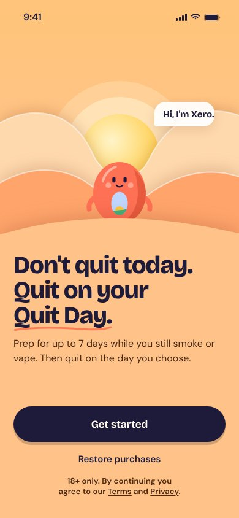
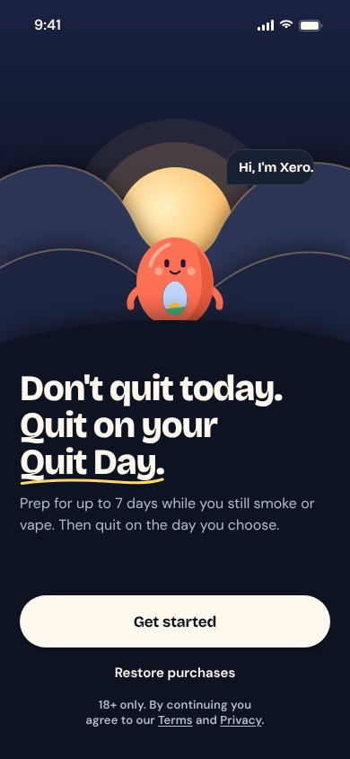
Motion Continues the launch scene: the paper hills settle up in three layers (0, 120, 240ms; 900ms settle), the sun climbs 60px behind Xero (1200ms ease-out) and Xero settles up from behind the front hill (900ms, starts 300ms). At 1100ms the speech bubble arrives with a 600ms rise. Headline, body and dock arrive in reading order from 500ms (600ms, 90ms stagger). Light haptic on Get started.
003
What you are leaving behind
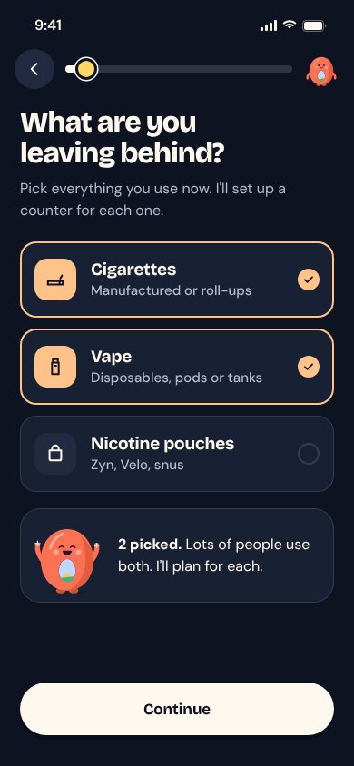
Motion Progress eases from 0 to 1/11 (900ms settle). Question and helper arrive (600ms, 90ms stagger), then the three option rows and the note in order. At 900ms Vape gets picked: the ring fills and ticks, the row dips to .97 and springs back (520ms), the caption count switches from 1 to 2 while Xero (88px, bobbing) cheers beside it. Selection haptic on each pick.
004
How much you smoke
Motion Progress eases from 1/11 to 2/11 (900ms). Question, stepper card, chips and the money line arrive in order (600ms, 90ms stagger). At 900ms the plus button presses (spring bump 520ms), the count rolls from 11 to 12 (rises 10px, 300ms) and the yearly line counts up from $1,606 to $1,752 (700ms ease-out). Selection haptic on each step.
005
Your baseline
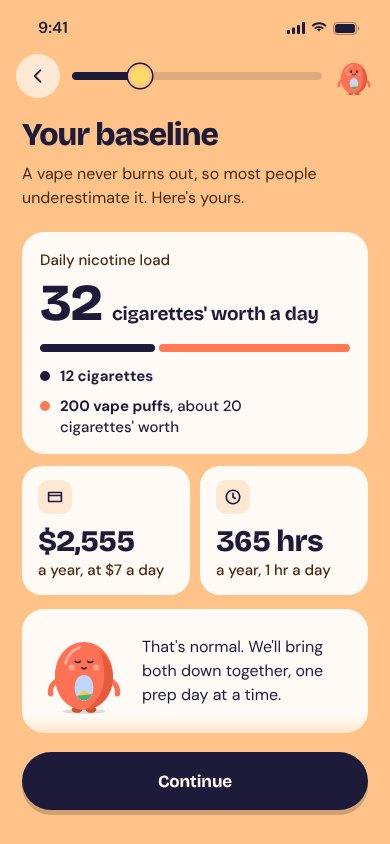
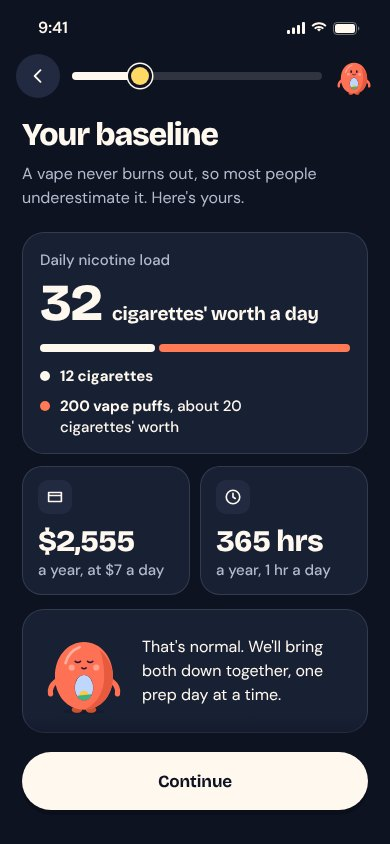
Motion Progress eases from 2/11 to 3/11 (900ms). Question arrives, then the load card: 32 counts up (850ms, from 300ms) while the split bar grows left to right, cigarettes then vape (700ms each, 120ms apart). The two stat cards arrive and count up $2,555 and 365 (850ms). No haptic; one soft tick when the counts land.
006
When cravings hit
Motion Progress eases from 3/11 to 4/11 (900ms). Question, then three labelled groups (wake time segmented row, Moments, Feelings and people) arrive in reading order (600ms, 90ms stagger), then Xero's card. At 900ms Stress fills to selected with a 520ms spring bump (scale 1.1) and a selection haptic; Xero bobs in his card as it reacts.
007
Make it personal
Motion Progress eases from 4/11 to 5/11 (900ms). Question and both fields arrive (600ms, 90ms stagger). From 800ms the reason types in at 26ms a character with a blinking caret (about 1.3 s), then the caret fades and the suggestion chips arrive (600ms, 90ms stagger), then the preview card where Xero settles in beside the quote the craving screen will show. Light haptic on Save my reason.
008
Onboarding obstacles
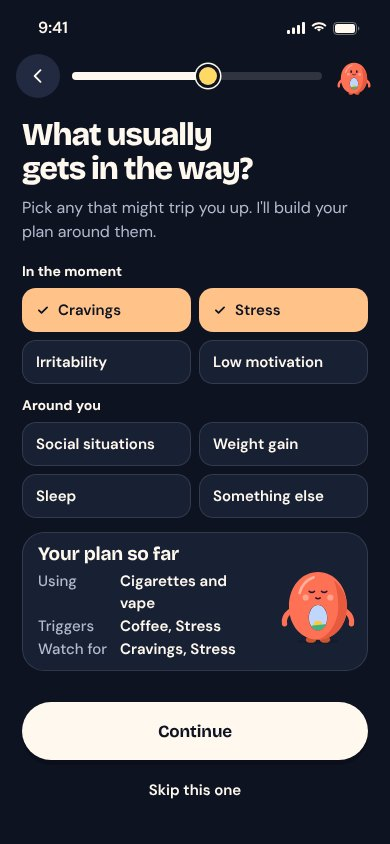
Motion Progress eases from 5/11 to 6/11 (900ms settle). Question, the two labelled two-column groups (In the moment, Around you) and the Your plan so far card arrive in reading order (600ms, 90ms stagger); Xero settles into the card and bobs. At 900ms Stress fills to selected with a 520ms spring bump and a light selection haptic, and the Watch for line in the card grows from Cravings to Cravings, Stress with a bump.
009
Onboarding NRT
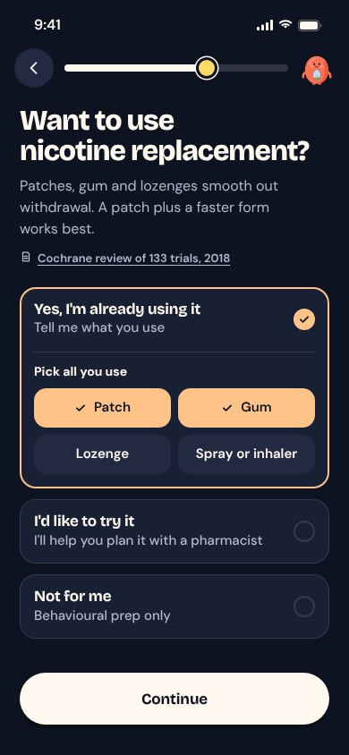
Motion Progress eases from 6/11 to 7/11 (900ms) as the question, source line and three option rows arrive (600ms, 90ms stagger). At 900ms the first row selects (ring and tick, 250ms, selection haptic) and the card grows and its product chips unfold inside it under a hairline (height 0 to auto, 420ms settle), then Patch and Gum fill one after the other 160ms apart.
010
Onboarding Quit Day
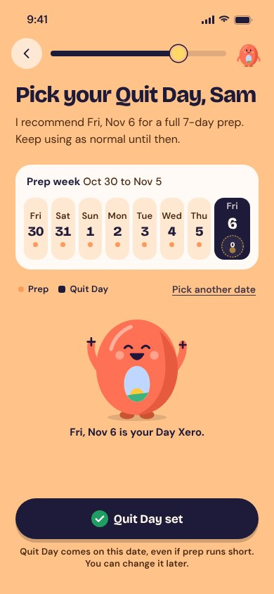
Motion Progress eases 7/11 to 8/11; title, week strip (tiles rise 90ms apart, the seven prep dots pop in left to right), Xero and the hold button arrive in order. Holding fills the button left to right over 1500ms with a soft ticking haptic; on release-complete the button turns to its done state (success haptic), the Day Xero badge stamps in inside the Fri 6 tile, under the date, replacing the sun dot, in its waiting form (620ms stamp spring, faded until it is earned on Quit Day itself), Xero swaps to cheer with a 520ms bump, and the line under him fades to the confirmation.
011
Plan building
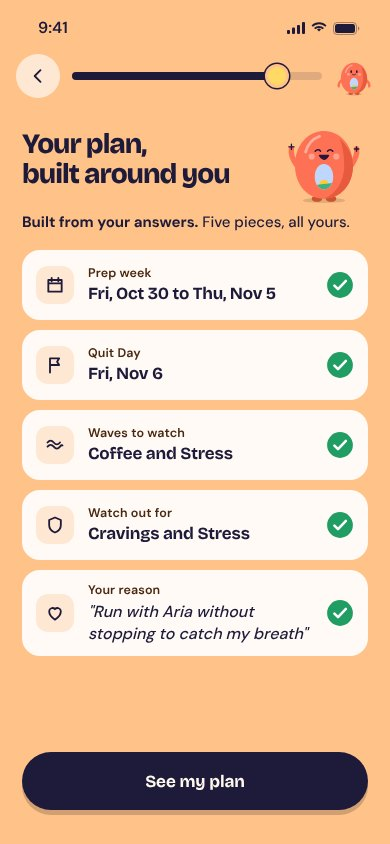
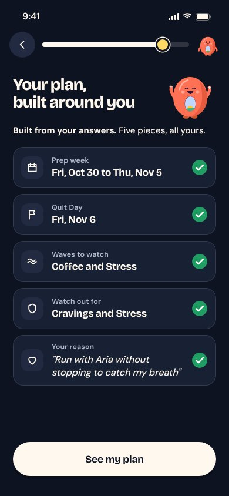
Motion Progress eases 8/11 to 9/11 while the title arrives and Xero settles in beside it. The five plan rows then settle up one by one, 380ms apart (900ms settle each); 450ms after each row lands its tick disc pops and the check draws (420ms) with a light haptic. After the last tick the status line swaps to 'Built from your answers', Xero switches to cheer with a 520ms bump (success haptic) and the button arrives.
012
Plan reveal
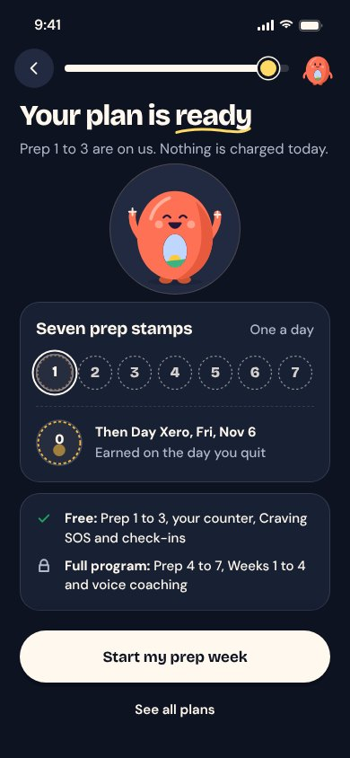
Motion Progress eases 9/11 to 10/11; title arrives and the underline draws under 'ready'. Xero settles up into his soft disc (900ms) and cheers, bobbing. The stamp card arrives: Prep 1 to 7 pop left to right 90ms apart (Prep 1 in its 'next' ring), then the Day Xero medallion fades in last in its waiting form (700ms, no spring: it is earned on Quit Day itself). The free and full lines and the button arrive after. Light haptic on the button.
013
Two nudges
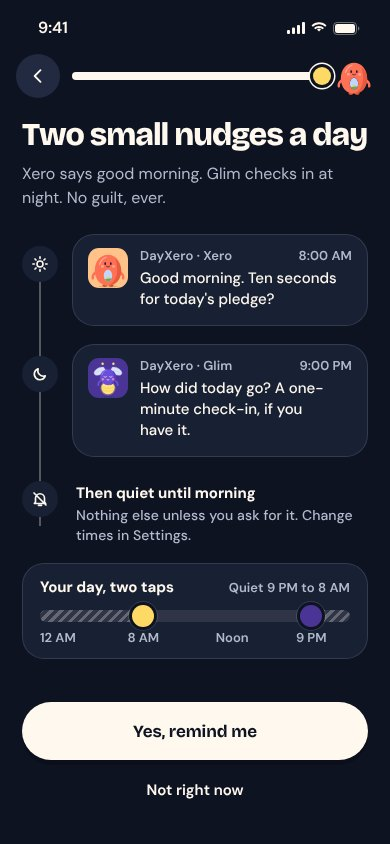
Motion Progress fills to 11/11 (900ms) and the sun lands at the end. Title and helper arrive, then the day line draws top to bottom (700ms) and the two notification previews settle in 380ms apart, each with a soft notification haptic: Xero at 8:00 AM, Glim at 9:00 PM. The bell on the day line bumps once when the second lands; at 1600ms the 24-hour card arrives and its two pins drop onto the bar with the quiet hours hatching in.
Paywall
Calm, credible, one plan picker.
014
Paywall
Motion Calm arrive only: headline, Xero (settles in, 900ms), the four ticks draw in 90ms apart, then the Yearly hero card and the collapsed Other plans row (tapping it expands Monthly and Lifetime under a hairline, 420ms settle), then the trial line. The Yearly row selects at 800ms (ring and tick, selection haptic) and the trial line draws left to right (900ms) with its three nodes fading in as the line reaches them. No springs, no shine: this screen stays quiet.
Today
Prep, Day 7, through the day, evening with Glim.
015
Today, prep week
Motion The dawn sun rises behind the hills (2.6s) while Xero settles onto the cream disc (900ms); the prep ring sweeps from 0 to 3 of 7 (1.4s, 250ms delay) and its dot fades in at the end. Greeting, countdown (the 4 counts down from 7), reason, the session card with its single Start button and the stamps strip arrive with a 90ms stagger; Prep 1 to 3 rise in one by one (90ms apart, no spring: they were earned earlier) and today's open Prep 4 slot breathes its outline (2.4s loop) and Prep 5 to 7 and the Day Xero slot wait as dashed medallions (Day Xero with its faint sun). Light haptic when the ring lands.
016
Today, after Quit Day
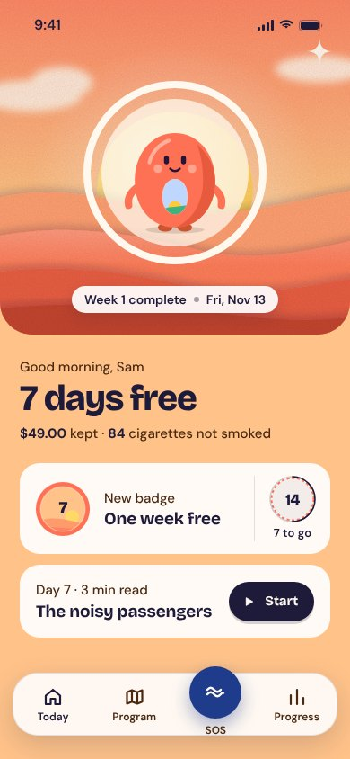
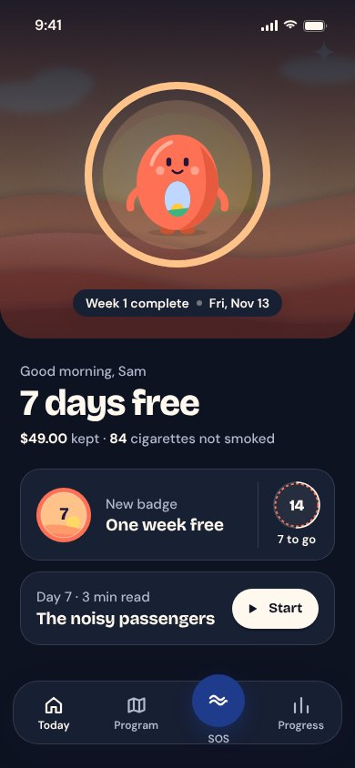
Motion The dawn sun rises (2.6s) while Xero settles onto the disc; the week ring sweeps to full (1.4s) and the 7 of '7 days free' counts up from 0 with the money and cigarettes counting alongside. At 1.6s the 7-day badge stamps into its card (spring, 620ms) and a shine crosses it; Xero switches to cheer for one hop; the 14-day badge's ring fills to half. Success haptic on the stamp.
017
Today, through the day
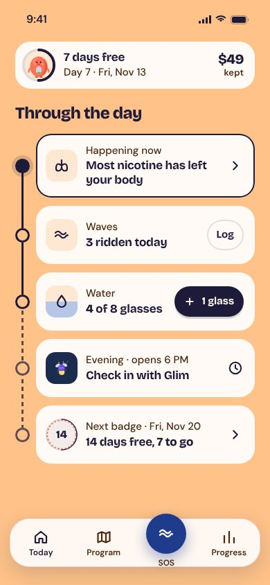
Motion Scrolled Today. The compact header arrives, then the spine draws top to bottom (900ms) while each row arrives on its node (90ms stagger); the Happening now node breathes (2.4s loop). At 1.2s the +1 glass button presses: a '+1' floats up from the counter, the count bumps from 3 to 4 (spring bump, 520ms) and the water in the tile rises from 3/8 to 4/8 (600ms settle). Light haptic on the tap, soft success tick on the bump.
018
Today, evening
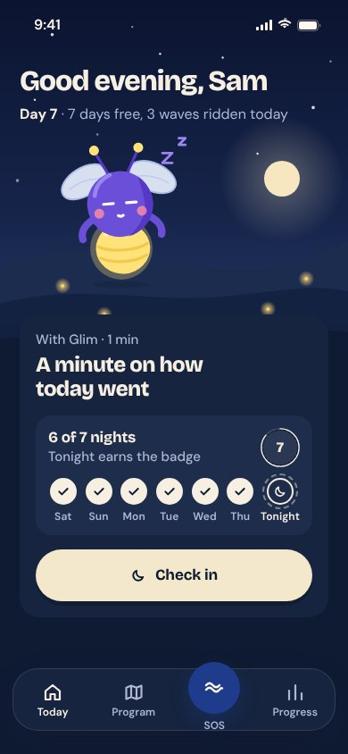
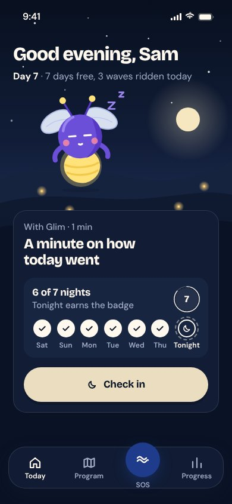
Motion Evening Today, all slow. The night sky fades in (700ms) with stars twinkling and fireflies drifting; Glim settles onto the hill beside the moon (900ms) and keeps a sleepy bob. Greeting, day line and the check-in card arrive with a 90ms stagger; inside it the six done nights fade in left to right (90ms apart, no springs), tonight's dashed slot breathes (4s in, 6s out) and the 6 counts up. Soft haptic on appear only.
Craving SOS
Ocean and Jelli only here. Calm motion, one +1.
019
Craving SOS
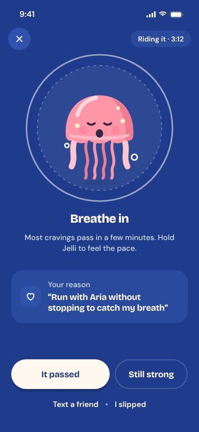
Motion Calm, no springs. Jelli and the pacer rings fade up together and breathe as one: 4s in (scale up), 6s out (scale down), looping; the outer pacer ring brightens on the in-breath. The single word under Jelli crossfades in 600ms between 'Breathe in' and 'and out' in time with the breath. The ride timer ticks each second. Reason card, the two buttons and the quiet row arrive with a slow 90ms stagger. Touching and holding Jelli gives a soft rhythmic haptic at the breath pace.
020
Craving passed
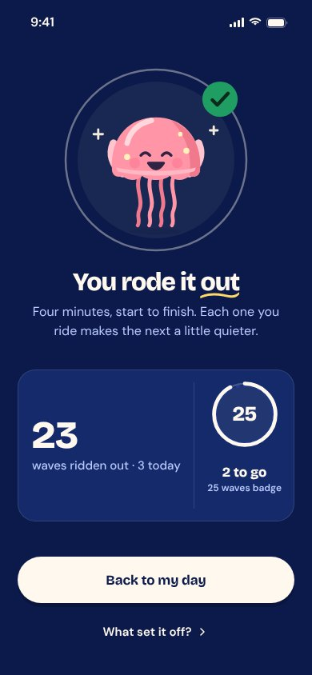
Motion The completion beat, gentle. A check draws on the pacer ring (420ms), then Jelli settles in cheering (900ms, one soft hop). Title and line fade up; at 900ms the wave count rolls from 22 to 23 while a '+1' floats up beside it (spring, the only one on the screen). At 1.3s the 25-wave badge fades in (700ms, no spring) and its ring creeps from 22 to 23 of 25 while
021
After a slip, plan
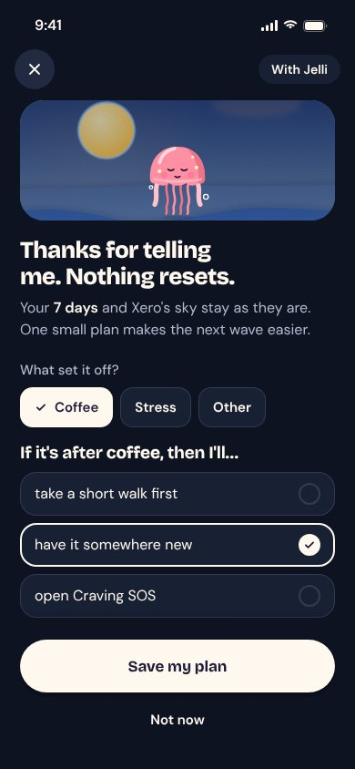
Motion Quiet tier, no springs. The inset sea card fades in (700ms, the same card as the slip screen) and Jelli (calm) settles into it from below (900ms) then keeps a slow bob; the title, the 'nothing resets' line and the 7-days note arrive with a 90ms stagger. The trigger chips arrive, then the if-then line and its three option rows settle in one by one (120ms apart). Choosing a chip rewrites the if-line with a 250ms crossfade. On Save the button turns to its done state and a soft success haptic plays.
Program
The path, with prep stamps on its nodes.
022
Program, prep week
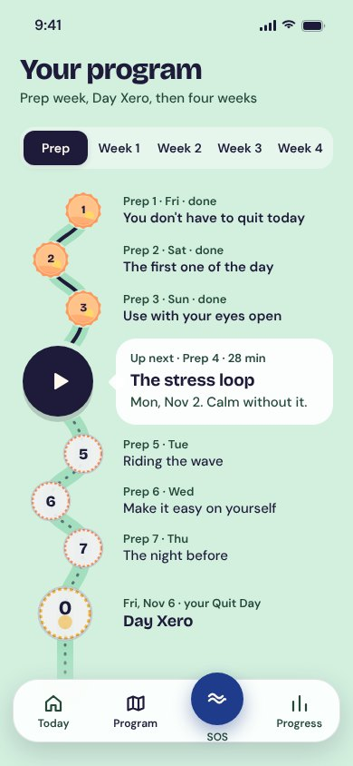
Motion Title and the segmented week control arrive (90ms stagger). The road fades in, then the ink line draws along it from Prep 1 to today's node (1100ms, ease); Prep 1 to 3 stamps and their labels arrive as the line reaches each one (about 360ms apart). Today's Prep 4 play node and the up-next card beside it arrive as the line lands, then the node breathes a soft pulse ring every 2.4s. Prep 5 to 7 (waiting: dashed prep-orange rings on cream with readable numerals) and the waiting Day Xero medallion (dashed gold ring, faint sun) fade in last. Light haptic when the line reaches today.
Prep session
The hand on a dark card table; cards carry the colour.
023
Session hand
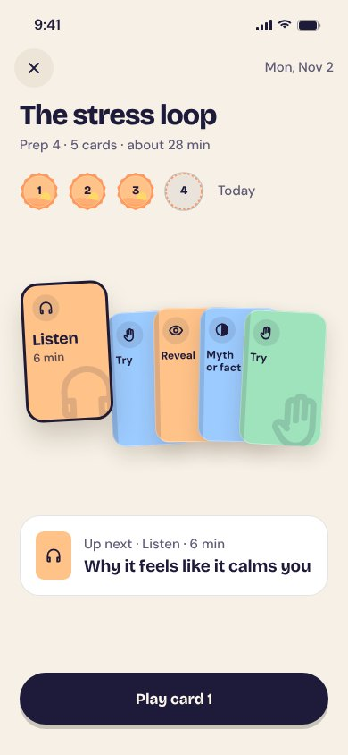
Motion Title and stamps arrive (600ms, 90ms stagger). The five cards deal in from below one by one (760ms settle each, 130ms apart, starting at 300ms) into the fan; card 1 lands last, lifted 26pt and tilted, the only card that shows its name. The up-next panel and button arrive after the deal. Light haptic on each card landing.
024
Session listen card
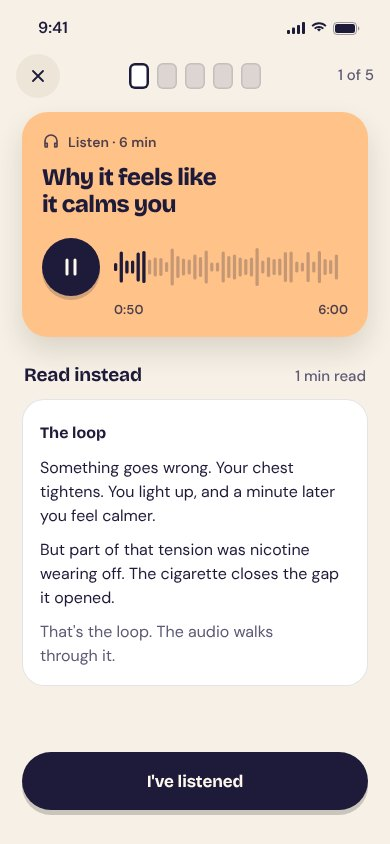
Motion The apricot card rises into place (settle 900ms) while the five pips arrive. Waveform bars grow from the baseline left to right (40 bars, 18ms apart, 420ms each); at 1.2s play starts: the icon swaps to pause, the played colour sweeps across the bars (linear, follows playback) and the time counts. Transcript card arrives last. Light haptic on play.
025
Session card played
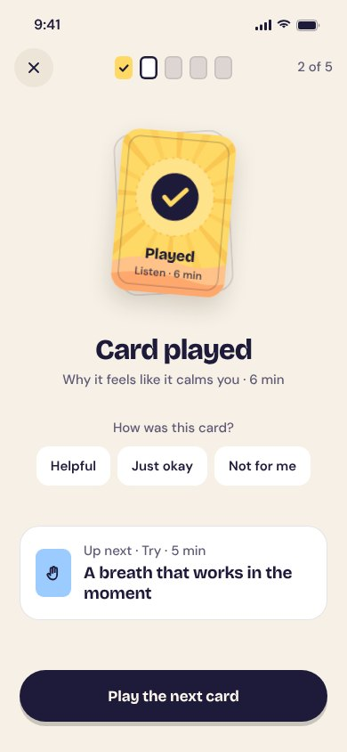
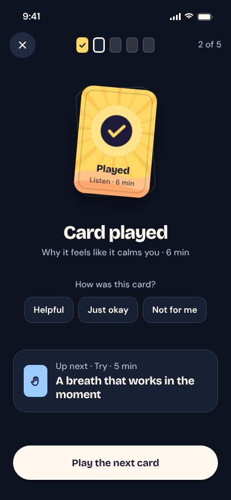
Motion The Listen card lifts from below, flips over (rotateY, 1100ms settle) to its sun back and lands tilted on the played pile; the ink check pops and draws at 1.1s (success haptic). Pip 1 fills with sun from the bottom (500ms) and pip 2 takes the cream ring at 1.5s while the label turns from 1 of 5 to 2 of 5. Title, rating chips and the next card preview arrive after.
026
Session reflect
Motion The mint Try tag and title arrive (600ms, 90ms stagger). Your two picks settle in as rows one after another (900ms settle, 120ms apart) while the picked count runs 0 to 2, then the add-your-own field and the other options arrive. Tapping a chip swaps it into the list as a row (selection haptic) and the count bumps.
027
Session choice
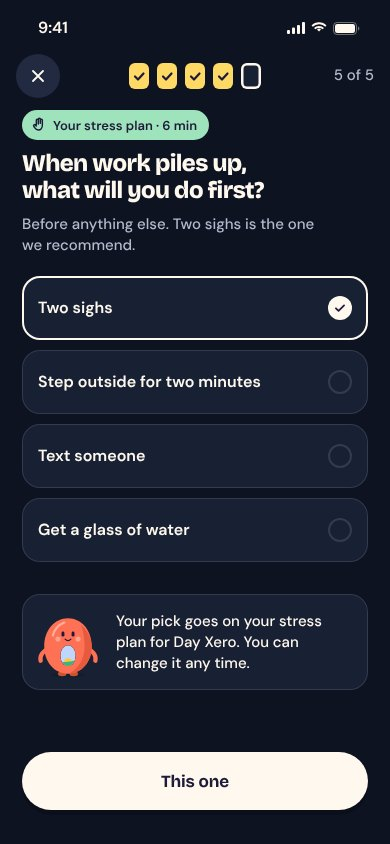
Motion Tag, question and helper arrive (600ms, 90ms stagger); the four option rows settle in (900ms, 120ms apart). At 1.5s the first row lands as the choice: it presses down 2pt, the ring and radio fill, the tick draws, and the row bumps (520ms spring) with a selection haptic. The note under the list fades in after the landing.
028
Session slider
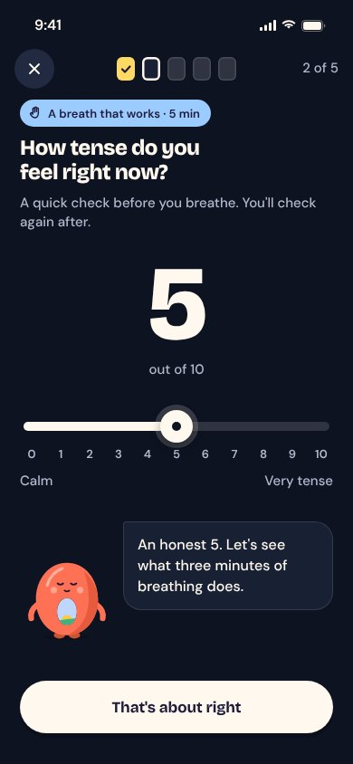
Motion Tag, question and helper arrive (600ms, 90ms stagger). The slider track fades in, then the thumb glides from 0 to 5 (1100ms settle, from 400ms) with the fill following it, while the big number counts 0 to 5 in step; a soft tick haptic on each whole number. Xero settles in last with his line.
029
Session commit
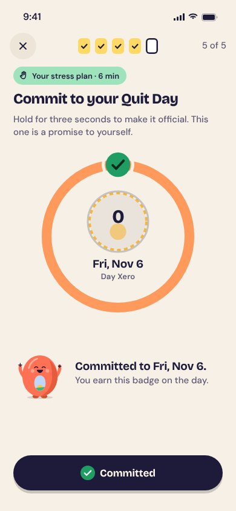
Motion Tag, title, ring and Xero arrive (600ms, 90ms stagger). Holding the button (3s, auto at 1.2s) fills the button and sweeps the cream ring around in lockstep (linear, a soft haptic tick every 0.5s). On held: the ring snaps to sun yellow and a check pops and draws where the ring closes (success haptic); the date steps aside as the Day Xero badge in its waiting form stamps onto it (620ms spring, no rays: it is earned on the day itself) and the date fades back in under it; Xero swaps to cheer and bumps; the line below becomes Committed to Fri, Nov 6. The button turns into Committed.
030
Session breathe card
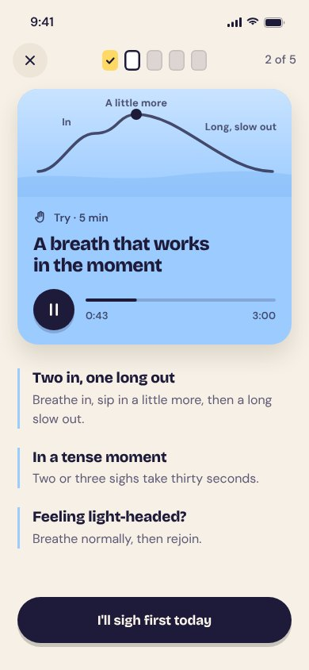
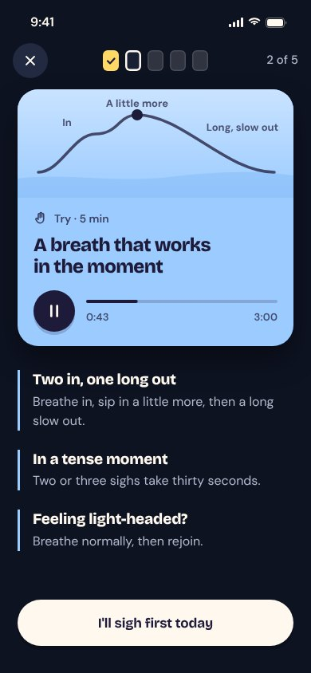
Motion The sky card settles in (900ms); its breath shape draws in (two in, one long out, 1600ms) and the dot pops at the top; the guided-breath progress line draws from 0 to the playhead (1400ms, 0:43 of 3:00). The three short steps arrive one by one (600ms, 90ms stagger) so reading paces itself. No haptic until the button.
031
Session mission
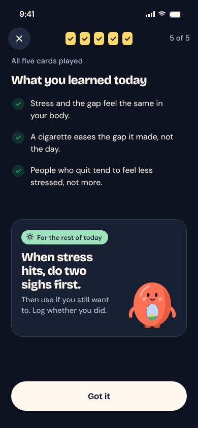
Motion Title arrives, then the learnings card arrives and its three ticks draw one after another (420ms each, 160ms apart). The mission card, the one hero, arrives last and Xero settles into its corner (760ms) with a light haptic.
032
Session complete
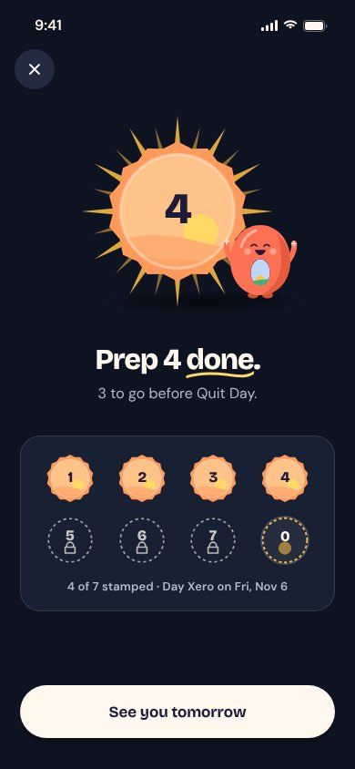
Motion Sun rays fade in behind (200ms), the Prep 4 medal stamps in (spring, 300ms) and shines; Xero settles onto the medal lower-right, sharing one ground shadow, and bumps at 1500ms. Title and line arrive; the shelf arrives, stamps 1 to 3 pop, then stamp 4 lands with a medium haptic and the count ticks 3 to 4.
Lesson
Reading ground, short pages.
033
Lesson intro
Motion The paper-cut dawn card fades up (600ms) with its sun rising (2.6s), Xero settles onto the hills at 200ms (900ms) and keeps a slow bob. Title, subtitle and the three 'inside' rows arrive with a 90ms stagger, then the Begin button. Light haptic on Begin.
034
Lesson cards
Motion The stack edges arrive first, then the top card is dealt face down and turns over at 450ms (rotateY 180 to 0, 800ms settle curve, light haptic as it lands). The paper-cut hills on the card lift in and the sun pops, paragraphs arrive with a 90ms stagger, pips and the Turn it over button last. Tapping Turn it over flips the card to its back (reflection prompt) the same way.
035
Lesson audio
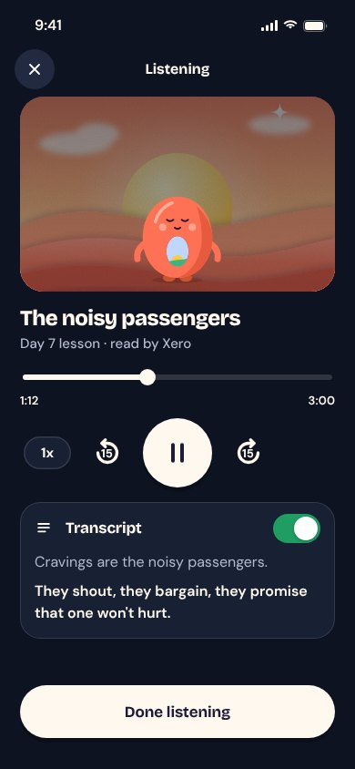
Motion Art fades up, Xero settles (900ms) then bobs while audio plays. The scrubber draws from 0:00 to 1:12 over 1.2s with the elapsed time ticking in step, the knob pops on arrival, the play button bumps into its pause state. At 1.5s the Transcript toggle slides on (light haptic) and the transcript opens (500ms) with the spoken line in full ink. The Done listening button arrives last (600ms).
Progress
Stats and the badge shelf.
036
Progress
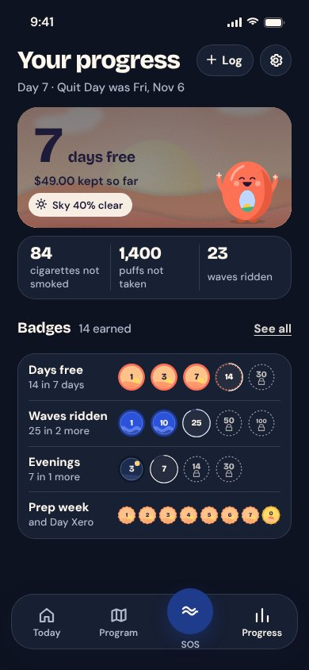
Motion The sky card fades up with its sun rising (clarity 40), the 7 counts up (850ms) while 'Sky 40% clear' arrives. Xero settles into the corner of the sky card and bobs. The stat strip arrives and each number counts up from 0. The badge shelf (earned plus the next three in each family) arrives as one card: earned badges stamp in (140ms stagger), the 7-day badge gets a shine at 1.2s, next badges sweep their progress ring. No haptic on load.
Health
What is changing, with sources.
037
Health timeline
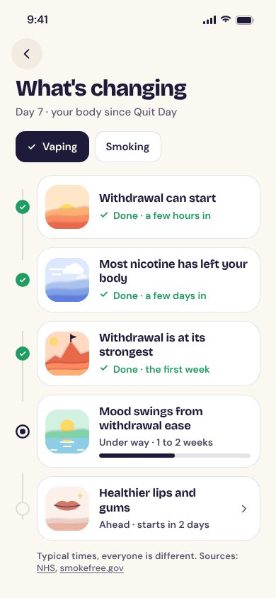
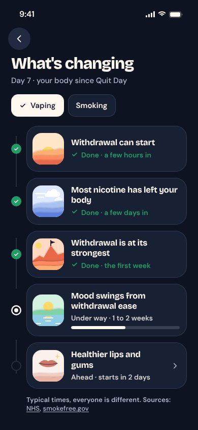
Motion Title and the Vaping / Smoking chips arrive; each card's paper-cut spot (its own motif: sunrise, clearing wind, summit flag, calm lake, lips) lifts in with the card, then the rail draws top to bottom (900ms) while timeline cards arrive with a 90ms stagger. Done ticks draw as each card lands; the Under way bar fills to 50% (900ms settle). Switching chips cross-fades the list (250ms) with a selection haptic.
038
Health change
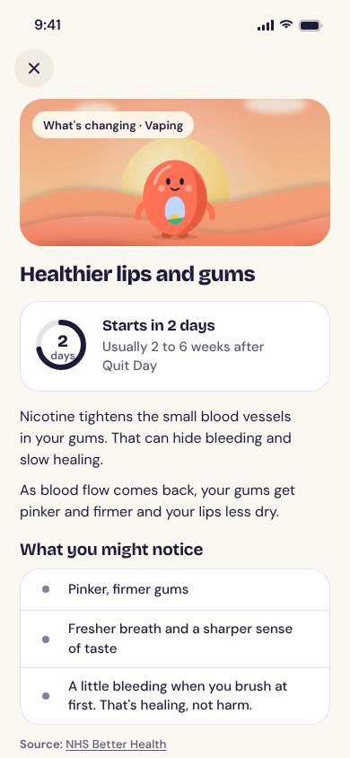
Motion The paper-cut dawn card fades up with its sun rising, Xero settles onto the hills (900ms) and bobs, then title, the timing card (the countdown ring sweeps to 5 of 7 days), paragraphs and the 'What you might notice' rows arrive with a 90ms stagger. No haptic.
Milestones
The celebration and the share card.
039
Milestone Day 7
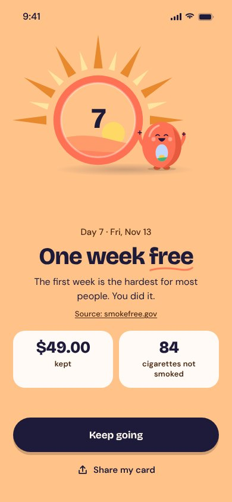
Motion A sunrise of rays fans out above the badge (fade 700ms) and sways gently (3 degrees, 8s loop); Xero stands on the same ground as the medal, overlapping its lower right, one soft shared shadow under both. At 250ms the Day 7 badge stamps in (620ms spring, success haptic on landing) and a shine crosses it at 900ms. Xero settles in at 500ms and cheers (hop loop). Headline, line and source arrive with a 90ms stagger; the two stats count up from 0 at 1.1s (900ms). Keep going and Share my card arrive last.
040
Share card
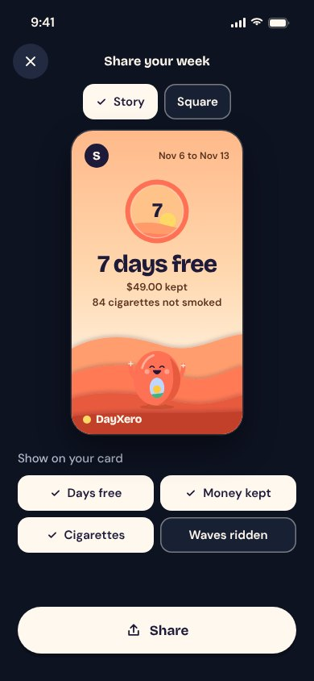
Motion The Story / Square chips arrive, then the card rises in and settles (900ms): its paper hills lift, Xero cheers on the front hill and the Day 7 badge stamps at 400ms. The Show on your card chips arrive; at 1.3s the Cigarettes chip turns on (selection haptic) and its line fades into the card while the card bumps. Square crops the same card to 1:1. Share sits in the dock; tapping it opens the system share sheet with the rendered card.
Logging
Log sheet and a craving, with a done toast.
041
Log sheet
Motion Today (the dawn hero ring with Xero) softens under the navy blur scrim (250ms fade) while the sheet slides up from the bottom (450ms settle curve, light haptic as it lands). The three rows arrive with a 90ms stagger, then the Today so far card (cravings count up to 3) and the slip note. Tapping a + bumps the button and pushes the matching form.
042
Log a craving
Motion Sections arrive with a 90ms stagger; the strength fill slides to 5 (700ms settle) and the knob lands with a light haptic. At 1.6s Save presses, turns into its done state 'Saved' with a tick (success haptic), and the label becomes 'Saved · 4 today' with the 4 bumping (no toast). The mood row uses the same four moon-faces as the evening check-in. After 1.2s the form closes.
Slips
Serious and kind. Nothing resets.
043
Slip: thanks for telling me
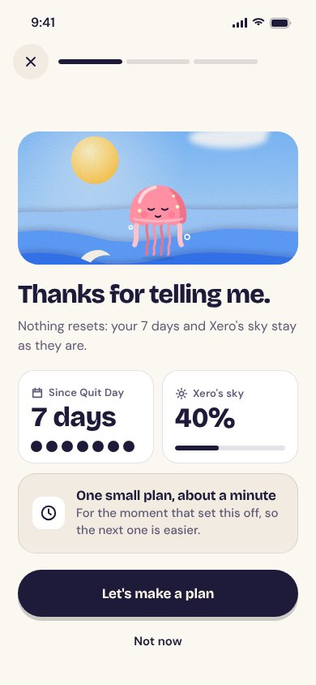
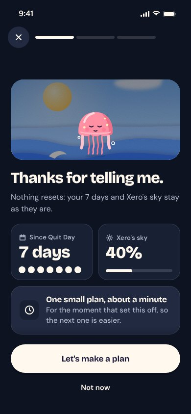
Motion Calm, no springs. The sea scene card fades up, its waves rolling slowly; Jelli (calm, 120px) settles onto the water from below (900ms) and then bobs, then title, body and the two 'still intact' tiles arrive with a 90ms stagger; the 7 and the 40% count up from 0 over 850ms; the next-step card and the button arrive last. Soft haptic on appear only.
044
Slip: talk it through
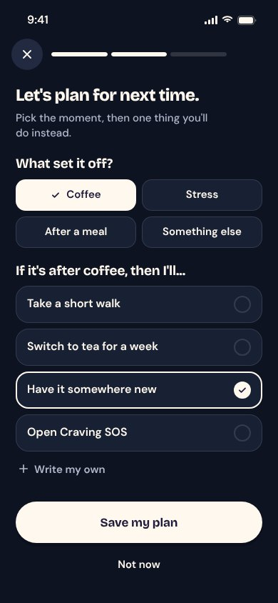
Motion Title, trigger chips and the if-then rows arrive top to bottom (600ms, 90ms stagger). At 1.3s the 'Have it somewhere new' row lands: its 2px outline and filled tick settle in over 520ms; the other rows stay fully readable. Light selection haptic on the land.
045
Slip: what happened
Motion Calm, no springs. Title and helper arrive, then each question group arrives in order (600ms, 90ms stagger), then the 'Only you see this' card with Jelli (calm, settles in 900ms then bobs), then Save. Chips sit in even two and three column rows so no option wraps alone. Tapping a chip fills it in 250ms with a light selection haptic.
046
Slip: plan saved
Motion Done beat: Jelli (cheer) settles in (900ms), the green check pops at its side and its tick draws (320ms later, 420ms) with a success haptic. Title arrives and the hand-drawn underline sits under 'saved', then the plan card settles up from 48px like a card being put down (900ms), then the Day 7 card arrives with the badge fading in intact (no stamp: nothing was lost or earned). Button and link arrive last.
NRT set-up
Step by step, with sources and a done beat.
047
NRT on track
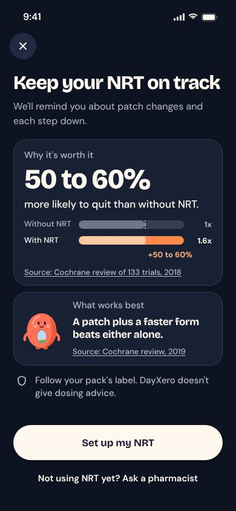
Motion Reading pace, no springs. Title and lead arrive, then the hero evidence card: '60%' counts up from 50 (850ms) while the 'Without' (1x) and 'With NRT' (1.6x) bars grow from the left (900ms, apricot bar 150ms later) and the dashed gap line with '+50 to 60%' fades in, then the combination card with Xero settling in (900ms, then a slow bob) and the caution note (600ms each, 90ms stagger); the button arrives last. No haptic until the button tap.
048
NRT products
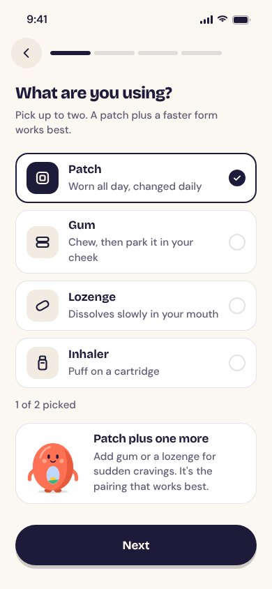
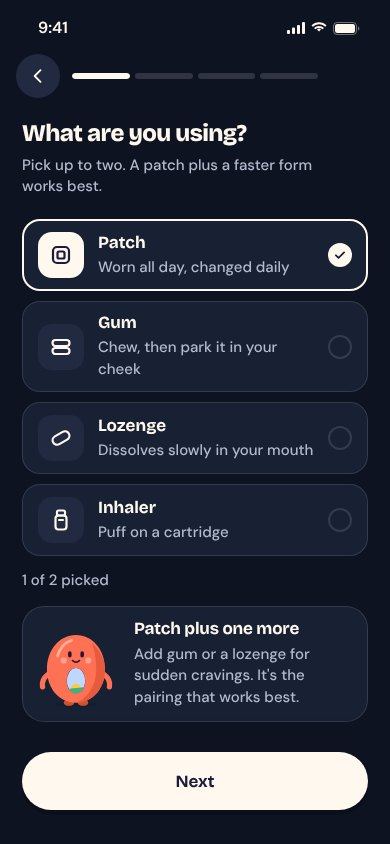
Motion Title arrives, then the four product rows arrive top to bottom (600ms, 90ms stagger). At 1.2s the Patch row lands selected: outline and tick settle in over 520ms with a light selection haptic, and the '1 of 2 picked' line updates. Xero (hello, 88px) settles into the tip card below and bobs. Tapping a third row gently shakes the counter instead of selecting.
049
NRT schedule
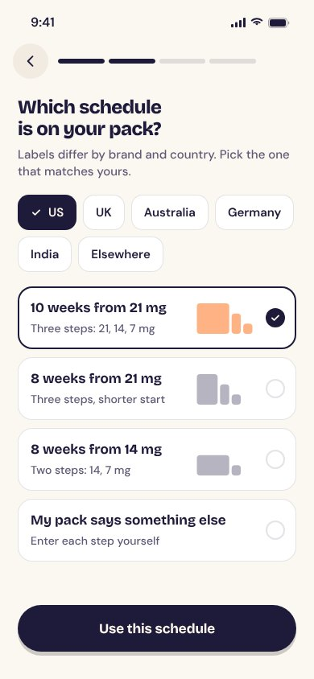
Motion Title and the country chips arrive, then the four schedule rows arrive top to bottom (600ms, 90ms stagger); each row's step-down glyph (72x40, widths by weeks, heights by mg) arrives with it; the selected one fills apricot. At 1.3s the 10 week row lands selected (520ms settle, light haptic). The list ends well above the dock.
050
NRT plan
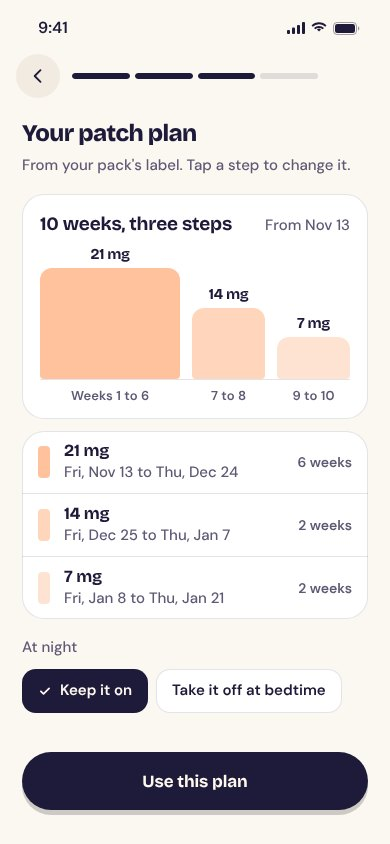
Motion Title arrives, then the step-down chart: the soft apricot 21, 14 and 7 mg bars (60%, 42%, 28% tint) grow up from the baseline one after another (900ms settle, 150ms apart), their labels sit just above each bar, and the week ranges arrive under them. The three step rows then settle in like a plan being laid out (120ms stagger). No completion here; the plan is confirmed on the reminders screen.
051
NRT reminders
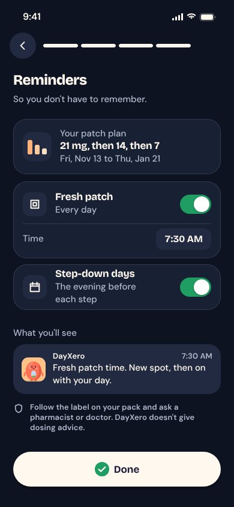
Motion Title, the two reminder cards and the preview arrive (600ms, 90ms stagger); both toggles slide on as they land. At 1.4s Done is pressed: the button keeps its ink colour and gains a green check (done state, no colour switch, no toast: the button is the confirmation), the bell in the preview bumps once. Success haptic on the check.
Taper
052
Pouch taper
Motion Title arrives, then the strength chart: the 6, 3 and 1.5 mg bars grow from the baseline in turn (900ms settle, 150ms apart) and the Quit Day marker fades in last. Step rows settle in (120ms stagger), then the timing note arrives with a soft warning haptic. The primary (Move Quit Day to Mon, Nov 23) slides the Quit Day marker and dates in place; 'Save my taper as is' is the quiet secondary.
Daily pledge
Hold to pledge; the sun comes up.
053
Daily pledge
Motion Dawn scene fades in (in dark mode the same scene is pre-dawn: a deep night wash with a few still stars over a low, dimmed sun, ending in clean ground under the title), Xero settles onto the hill (900ms) then bobs; date, pledge (underline under 'won't'), one quiet line, reason card and the hold button arrive in order (90ms stagger). At 1.5s the button is held for 1s (fill sweeps left to right, light ticking haptic), turns green 'Pledged' with a success haptic; the sun rises 40px and the haze thins over 1.6s, Xero swaps to cheer and re-settles, and the line 'Glim will check in tonight at 9:00 PM. No pressure.' fades in under the button.
Check-in
Violet is Glim’s evening. A night badge on save.
054
Evening check-in
Motion Dim and slow, no springs. The night sky fades in (700ms) with stars twinkling and fireflies drifting; Glim settles in (900ms) then bobs. The date line, title, day choice, SOS row and the four faces arrive in order (600ms, 90ms stagger); the '3' in the SOS row counts up. The four mood faces are little moons (slate, pale, warm, apricot) with their own expressions; at 1.6s 'Good' fills in and its face tilts up a touch (400ms settle) with a soft selection haptic. Edit is a readable outlined pill. Save arrives last.
055
Check-in done
Motion Done beat, kept dim. The night sky fades in (700ms); Glim (cheer) settles in beside the empty badge spot (900ms) then bobs. At 1.1s the 7-night badge stamps in large (168px) inside its sun-gold ring (620ms spring, medium haptic) and at 1.75s a shine sweeps across it once. The small check by 'Check-in saved' pops and draws (success haptic), the title arrives with the underline under 'well', the nights count rolls 6 to 7 with a '+1' floating up, and the next-badge bar sweeps to 50%. Good night arrives last.
Calm tools
056
Calm tools
Motion Cards arrive top to bottom on the 90ms stagger; each tool has one large, simple mark on its family colour: a dot travels round the box (16s, the breathing pace), the grounding rings sit still, the urge is one wave with its rider, the wind-down moon on night blue. No haptic on load, light tap haptic on card press.
057
Box breathing
Motion The dot travels the square at an even pace, 4s per side (16s a round) while the sea window and Jelli inside it swell over the in side, hold, shrink over the out side and hold (Jelli breathes with it); on each corner the phase word, the lit side-label pill fills (500ms) and the cue cross-fades (220ms) and the count ticks 4 to 1 each second. A soft haptic tick at every corner, nothing else.
058
Grounding
Motion The done step slides in compact, then the current step card arrives large and Xero settles into its corner (500ms); the pips fill one by one at 0.9s, 1.7s and 2.5s with a small bump and a light haptic each, as if tapped; the last pip waits for the user. Tapping Next collapses this card into a done row and lifts the next step up (500ms settle).
059
Notice the urge
Motion Inside an inset card, the wave line draws left to right over 2.4s from its start dot to its end dot, the soft tint and the paper sea layers fade in under it and the three labels (It rises, It peaks, It passes) arrive beside their points on the curve; Jelli then rides the wave for 12s (slow ease), rising to the crest and gliding down, while the single 28px prompt cross-fades every 3s (600ms): notice, it rises, the peak, watch it fall. No springs, no haptic until It is passing is tapped (soft success haptic, goes to 060).
060
Calm done
Motion The paper sea disc fades in, Jelli settles into it cheering (hop loop, 250ms), then the small check pops beside Jelli and its tick draws (900ms, success haptic); the headline with its drawn underline and the line arrive, minutes of calm counts 6 to 8 at 1.2s with a +2 floating up; chips arrive last. No other springs.
Settings
Navy in dark mode now, one header, one list style.
061
Settings
Motion The profile card arrives first: its dawn sky (clearing as the days add up) lifts its sun as Xero settles onto the hill at 450ms, then each group arrives top to bottom on the 90ms stagger; the 7-day badge on the profile card stamps in at 700ms. Rows highlight on press with a light tap haptic and push their page from the right.
062
Reminders
Motion Groups arrive on the stagger; at 1.0s the Craving forecast toggle slides on (300ms settle, light haptic), the toggle is its own done state (no toast) and the
063
Day ends
Motion Options arrive on the stagger with Midnight selected; at 1.0s the selection moves to 4 AM (ring and tick 250ms, selection haptic), the timeline below shows the 1:30 AM check-in landing on Thursday; the choice saves at once with a success haptic (the filled radio is the done state, no toast).
064
Quiet hours
Motion The moon start handle pops at 10 PM, then the dial arc sweeps from it round to 7 AM (1.4s settle) where the sun end handle fades in, as the 9 counts up in the centre; the From and Until tiles and the while-it-is-quiet list arrive below on the stagger. Changing a time drags either handle with a selection haptic per 15 minutes.
065
What you use
Motion Option rows and the usual-day list arrive on the stagger, then the daily and yearly totals count up ($7, $2,555). Each stepper tap nudges its number with a small bump, a selection haptic, and the totals recount live.
066
Quit Day
Motion The date card arrives, the day count rises 0 to 7 and the earned 7-day badge stamps in at 700ms; the seven day ticks of the first week pop in left to right (110ms apart) ending on the Today ring; the change card follows. Choose a new date opens a calm confirm sheet first, never a direct date wheel.
067
Currency
Motion The search field and rows arrive on the stagger; at 0.9s US Dollar is picked (ring and tick 250ms, selection haptic) and saves at once with a success haptic: the filled radio is the done state, no toast. Typing in search filters rows with a 200ms fade.
068
Subscription
Motion The plan card arrives and the price counts up to $39.99 while Xero settles into its corner (400ms); the What you get card follows: its path scene drifts its clouds and the four perks settle in 90ms apart. Manage opens the App Store subscription sheet.
069
Privacy and your data
Motion The lead card arrives and Xero settles into it (300ms), then the data list and the coral delete card arrive on the stagger. Delete everything asks for a 2s hold on a confirm sheet (warning haptic), so it can never be a slip of the thumb.
070
Apple Health
Motion The connected card arrives with the DayXero and Health tiles, the dotted link and its check; the Health heart gives one soft bump at 900ms; the write and read groups follow on the stagger. Flipping a toggle opens the system Health permission sheet.